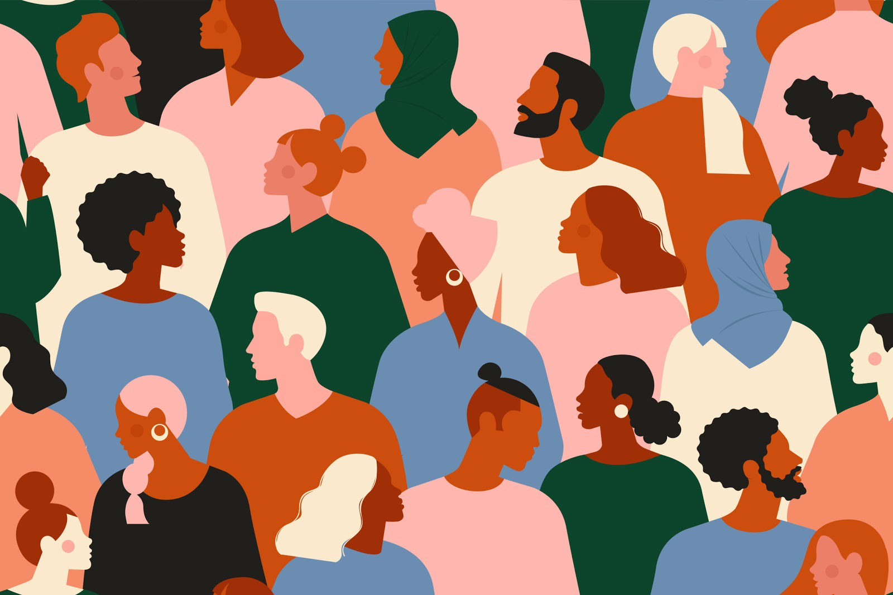

A 2021 study by McKinsey & Company found that there is a serious lack of representation for minority groups in Hollywood. To start, there are few stories which depict minorities or marginalized groups. Moreover, Hollywood’s network of directors, producers, and actors lacks diversity with the majority of its community composed of white, older males. In fact, in a recent study, researchers discovered that film studio heads were 94% white, and TV network and studio heads were 96% white; senior management in the film industry was 92% white, and senior management in the TV industry was 93% white. The resulting effects of this homogenized society is that it places white personas and stories as superior to those of marginalized groups and minorities.

This website serves as an introduction to films that celebrate diversity. In particular, they either contain either a racially diverse cast or strong LGBT characters. Through the lens of this project, readers will be able to understand the importance of diversity in Hollywood, engage in thoughtful conversations with others, and subsequently seek out further films that portray diversity and underrepresented groups. It is the author’s hope that this website will encourage others to seek out diverse films and other media. Readers are also encouraged to use this content as a conversation starter with friends and family as they explore what it means to be a film of diversity in Hollywood.